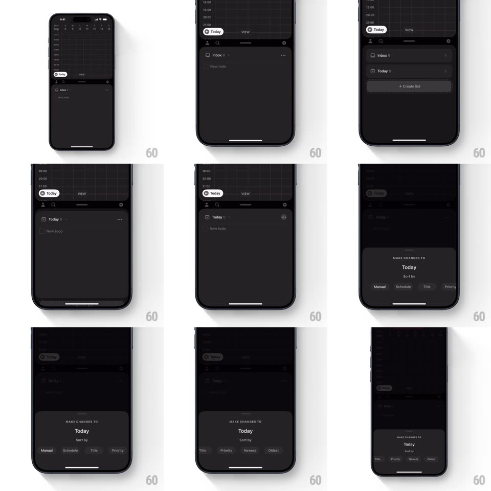

Media
Frame-by-frame

Rebuild this interaction 1:1: Amie's list interactions - tapping a list row ("Inbox", "Today") expands it accordion-style in place revealing its contents, and tapping its "..." opens a springy "MAKE CHANGES TO Today" sheet whose "Sort by" options scroll horizontally (Manual, Schedule, Title, Priority, Newest, Oldest).

Rebuild this interaction 1:1: Amie's list interactions - tapping a list row ("Inbox", "Today") expands it accordion-style in place revealing its contents, and tapping its "..." opens a springy "MAKE CHANGES TO Today" sheet whose "Sort by" options scroll horizontally (Manual, Schedule, Title, Priority, Newest, Oldest).
## Integration
Integration: stack-agnostic spec - springs given as stiffness/damping, timed motions as duration + curve; map every value to your framework and animation library of choice.
## Scene
Dark task manager: calendar up top, list rows below ("Inbox 2", "Today 1", "+ Create list"). Expanded row: the row grows revealing a "New todo" input under its header, the "..." on its right. Menu sheet: "MAKE CHANGES TO" eyebrow, the list name big, "Sort by" label, and a scrollable chip row of sort options.
## Motion spec
Pattern: in-place accordion with a springy action sheet.
- Tap a list row: its chevron flips (180deg, 250ms) and the row expands downward (height spring ~340/24), sibling rows sliding down to make room; the "New todo" field fades in inside the new space (200ms, 80ms late).
- Tapping an expanded row collapses it with the same spring reversed - rows below float back up.
- Tap "...": the menu sheet springs up (spring ~310/20, one soft overshoot), dimming the lists 45%; its content staggers (eyebrow, name, sort label, chips - 50ms apart).
- The sort chips scroll horizontally with momentum; the active sort chip carries a filled pill that slides between options (spring ~380/22) on tap.
- Sheet dismiss (drag-down, backdrop, or selection) drops it (spring ~350/26), the accordion state behind untouched.
## Calibration
- Only the tapped row animates; other rows translate rigidly - one flexible element per accordion.
- The sheet's title is the LIST'S name, not a generic "Options" - the sheet belongs to the row.
## Reduced motion
Accordion toggles without spring; sheet fades in.
## Don't miss
- Expansion happens IN the list, not on a new page - the hierarchy stays visible.
- The sort pill slides rather than swapping - one indicator traveling across options.